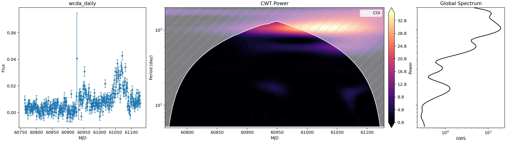
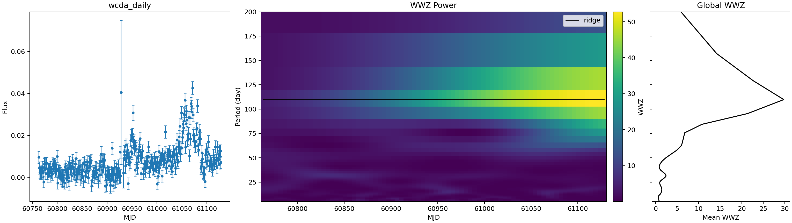
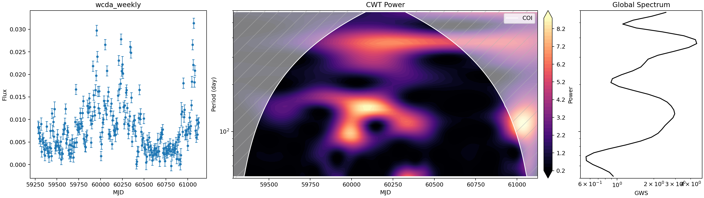
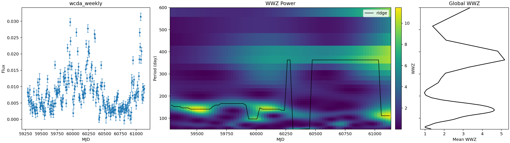
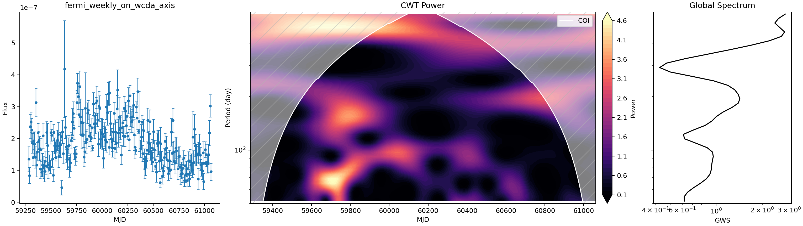
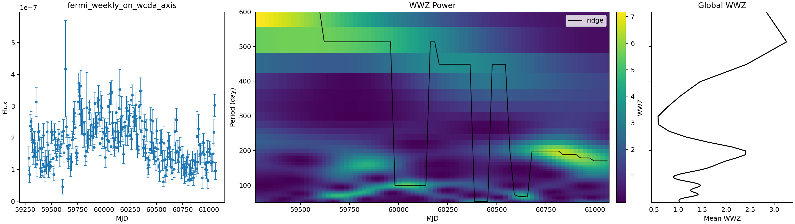

Mrk 421 WCDA/Fermi Periodicity Analysis v1
Data Synchronization and Alignment
The WCDA merged products were copied from IHEP into the local processed data area:
data/processed/wcda_week/LHAASO-WCDA_Mkn421_2021-03-08_2026-03-29_week.csvdata/processed/wcda_day/LHAASO-WCDA_Mkn421_2025-03-29_2026-03-29_day.csv
Aligned CSV outputs were written to data/processed/aligned/. The Fermi weekly product is mapped onto the WCDA weekly MJD axis with nearest-bin matching; WCDA bins beyond Fermi coverage remain as NaN. In the generated aligned Fermi table, 14 of 264 WCDA weekly bins have missing Fermi flux.
Methods
WCDA flux is represented as an excess rate, sum(n_on - n_bkg) / tobs, with a Poisson-style on/off error approximation propagated per hit bin. CWT uses a Morlet wavelet through pycwt. WWZ uses libwwz with the v1 quick-look grid saved by src/pipeline/periodicity_v1.py.
No red-noise simulations, Monte Carlo thresholds, local significance contours, pre-trial significance, or post-trial significance are included in this version.
Peak Summary
| Series | N | MJD min | MJD max | Median dt [d] | CWT peak [d] | CWT GWS | WWZ peak [d] | WWZ power |
|---|---|---|---|---|---|---|---|---|
| WCDA daily | 360 | 60763.167 | 61128.167 | 1.000 | 104.95 | 19.650 | 109.77 | 29.772 |
| WCDA weekly | 264 | 59284.333 | 61125.167 | 7.000 | 367.33 | 4.486 | 363.22 | 5.177 |
| Fermi weekly on WCDA weekly axis | 250 | 59284.333 | 61062.167 | 7.000 | 583.10 | 2.828 | 513.37 | 3.260 |
- WCDA daily: CWT global peak near 104.95 d; WWZ mean-power peak near 109.77 d.
- WCDA weekly: CWT global peak near 367.33 d; WWZ mean-power peak near 363.22 d.
- Fermi weekly on WCDA weekly axis: CWT global peak near 583.10 d; WWZ mean-power peak near 513.37 d.
Figures
WCDA daily


WCDA weekly


Fermi weekly on WCDA axis


Outputs
- Aligned CSVs:
data/processed/aligned/ - CWT/WWZ arrays and plots:
data/processed/periodicity/ - Pipeline entry point:
python src/pipeline/periodicity_v1.py